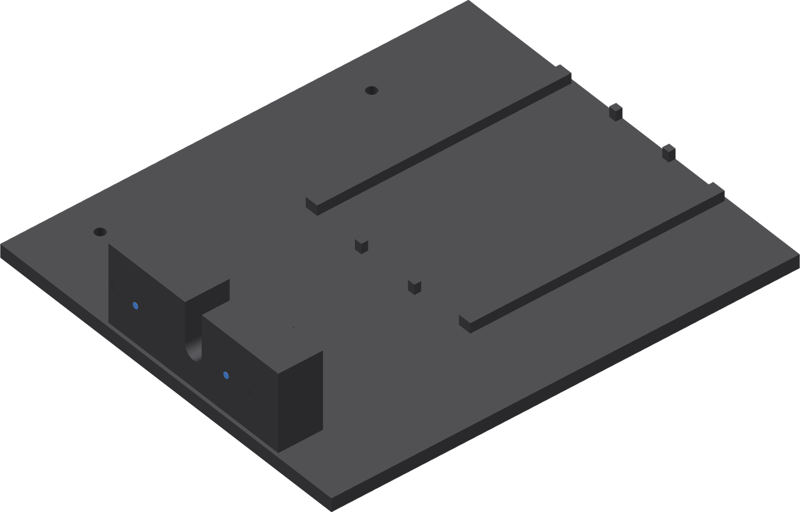

Clean and mark base A
Base A combines the donor nest, reaction block, carrier guides and travel stops. Mark the two fixed-pad centres on the block's rear face.

- Remove print remnants and any supports generated by the prepared project. Clear the donor notch, guides and stop faces.
- Remove strings and raised edges from the two fixed-pad regions and the donor annulus contact face. Preserve their flat bearing surfaces.
- Clear the carrier path and guide faces. Keep the attached faucet lever and valve plunger clear of the fixture.
- Use fine ink to mark two dots on the block's rear face, both 30 mm above the base underside: the near dot is 36.75 mm from the front (-Y) edge; the far dot is 19.25 mm from the back (+Y) edge of the 120 mm-wide block.
Finished when
The bearing faces and carrier path are clean. Both fixed-pad centres are marked on the flat rear face.